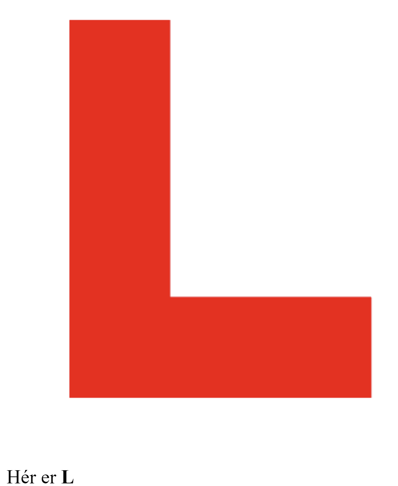
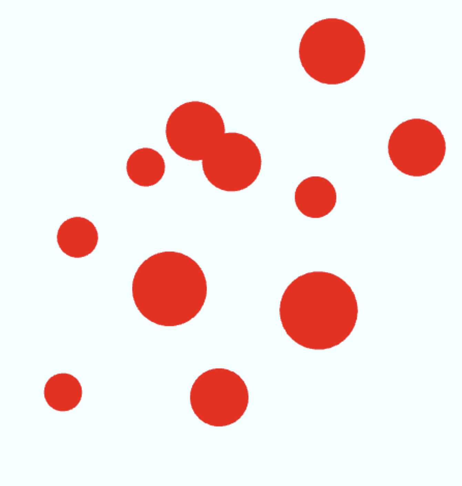
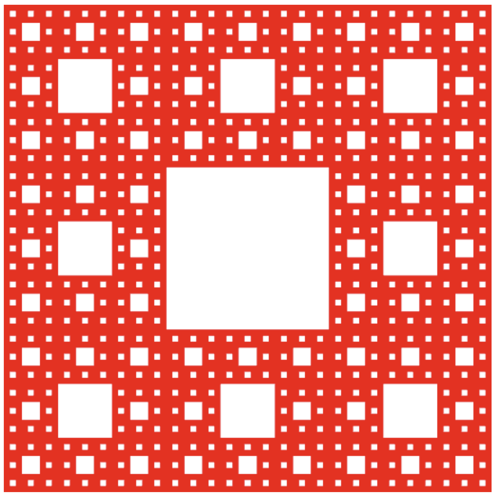

Dæmi 1
Mynd af 1A:

A: Í dæmi eitt A breytti ég gasket1, þ.a. fyrsti punkturinn er vel fyrir utan þríhyrninginn (100,100). Hér er mynd af efninu og hlekkurinn er Hér
Mynd af 1B:

B: Eins og sést á myndinni eru mun meiri líkur á að vinstri hornpunkturinn verði fyrir valinu. Hér er 1B
Dæmi 2
Mynd af 2:

Hér lærði ég að nota slider sem er gott að læra. Ég notaði CIRCLE_FAN til að tengja hnútana saman og hnútarnir eru á bilinu 3 til 50.
Hér er vitnunin í hringinn.
Dæmi 3
Mynd af 3:

Ég breytti L-shape-fan sem notar TRIANGLE_FAN yfir í TRIANGLE-STRIP með því að nota fyrsta punktinn tvisvar. Þríhyrningarnrir voru: ABC, BCD, CDA, DAE og AEF. Síðan breytti ég einnig hámarksfjölda hnúta frá 6 yfir í 7.
Hér er vitnunin í L-ið.
Dæmi 4
Mynd af 4:

Hér lærði ég að búa til mismunandi stóra hringi með hjálp Math.random() (ég lét radíusinn vera á bilinu 0.05 til 0.15). Síðan lærði ég að búa til hringi utanum miðpunktinn. Síðan notaði ég TRIANGLE_FAN til þess að búa til hringina.
hér er fjögur.
Dæmi 5
Mynd af 5:

Hér lærði ég að búa til þetta mynstur með því að nota mix fallið og að splitta ferningunum með endurkvæmni og fleiru. Auk þess notaði ég TRIANGLES fallið til að búa til tvo þríhyrninga sem mynda þessa ferninga. Ég skissaði á Ipad kassann og það auðveldaði mér að vita hvaða punkt ég átti næst að kalla á í endurkvæmninni.
Hér er fimm
Lokaorð
Þetta var afar skemmtilegt verkefni og ég lærði mikið!